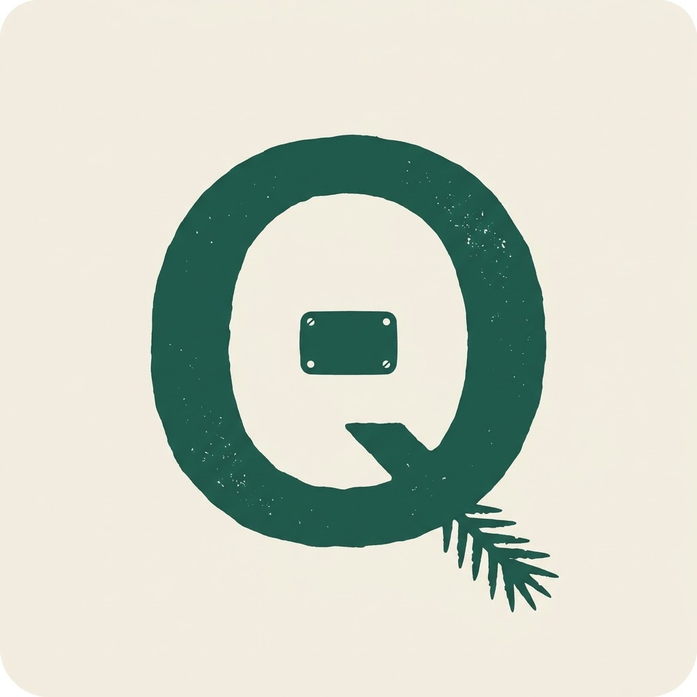

Sin evidencia
No se distingue lo que el técnico confirmó en placa de lo que estimó de memoria.
Decentralized AI Hackathon · ISD × Tether
El cuaderno de campo que entiende la visita y se queda en el teléfono. Observaciones de equipos médicos, con evidencia. Inferencia en QVAC, de Tether — no en la nube.

01 · El problema
El inventario de equipos médicos nace en la visita y se muere en el cuaderno.
Quien entra al hospital ve el tomógrafo. Anota, graba, fotografía. El dato no llega entero, se duplica, o viaja a un Excel que nadie consulta con confianza.
No se distingue lo que el técnico confirmó en placa de lo que estimó de memoria.
«¿Quién tiene resonadores de más de 7 años en México?» no cabe en una nota de voz.
Audio y fotos de equipos son datos sensibles. Muchos sitios no tienen red usable.
02 · Cómo lo resolvemos
Whisper transcribe. El OCR lee la placa. Qwen extrae cliente, modalidad, fabricante, modelo, cantidad y año. Cada campo nace con un estado: Confirmado, Reportado, Estimado o Desconocido.
Las visitas se unen al mismo cliente y al mismo equipo. Después preguntás en español, portugués o inglés — contra SQLite local, no contra un chat que inventa números.
Observación en campo · on-device
Lenguaje natural · números anclados
equipos cumplen el filtro. El resumen lo redacta el modelo; los números salen de la base local.
03 · Sobre QVAC
Q-Pino corre sobre QVAC, la plataforma de Tether: Whisper, OCR y Qwen en el dispositivo. Los pesos se descargan una vez. Alojar una pantalla o guardar datos no sensibles en la nube no rompe la regla; enrutar un prompt a una API sí — y eso no ocurre aquí.
Sin API de inferencia. Si no hay red en el hospital, la visita sigue.
on-deviceon-deviceon-devicelocalAhora · la demo
Nota de voz o texto. Mostrar extracción y chips de evidencia.
Foto → OCR → Confirmar. Una observación, no un duplicado.
«Tomógrafos de más de 7 años» o «clientes con información incompleta».
La placa es la prueba más fuerte. El modelo no adivina el año si el texto dice «instalado en 2018».
Q-Pino